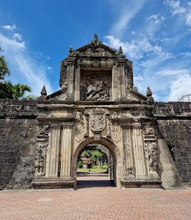

Open the world map
Each region is a doorway to places that changed how people lived, built, and imagined the world.
Pin a place. Step into history.
Have you ever looked at an old wall, a ruined fortress, or a centuries-old church and wondered what happened there? Travel the world through the places where history was made.
Begin in the Philippines. Discover Fort Santiago, Baluarte de San Diego, and stories from around the world.



Pick a pin. Step into history!
Curiosity is your compassYour journey begins here
You don’t need a passport, a plane ticket, or a big budget. Just a curious mind.
Each region is a doorway to places that changed how people lived, built, and imagined the world.
Pick a continent and browse countries with remarkable landmarks and layered histories.
Explore historic sites through concise stories that bring people, events, and places into focus.
A few places to begin
From the Philippines to the heart of the Roman world, each landmark holds more than stone.
A riverside citadel transformed into a symbol of Filipino courage and freedom.
An engineering marvel where public spectacle bound Roman citizens to imperial power.

Dynasties linked fortifications across mountain ridges to guard the northern frontier.
Your next discovery is waiting
Choose a continent, find a pin, and follow the story to the place where it began.
Start Your Journey